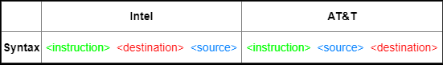

Assembly (ASM) basics
X86 syntaxes
x86 (both 32- and 64-bit) has two alternative syntaxes available for it:
• Intel (Windows)
• AT&T (Linux)
◇
source and
destination:
▪ percent sign (%) before registers names
▪ dollar sign ($) before numbers
◇ suffix for
instructions(defines the size of the operands):
▪ Q (quad – 64 bits)
▪ L (long – 32 bits)
▪ W (word -16 bits)
▪ B (byte – 8 bits)
